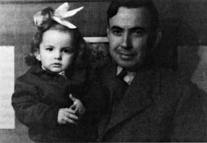

Eskimo, Beyaz,
1 Ağustos Pazartesi – saat ikindiüstü 16:30’a doğru mektubun geldi. Hamsun’dan günlük program beş sayfayı tamamlamış, temize çekiyordum, mektubun geldi. (Günün bu saatleri siz gittikten sonra ayrı bir önem kazandı, şiiri yazılmıştır[27], henüz taslak halinde.)
Bu gelen, 26 Temmuz tarihli bir mektuptu, satırlar arasında gizli bir üzüntü sezdim. Sebep? Geçen mektubumda parça parça aksettirdiğim “yalnız yaşayışım mı” seni üzdü? Perişan değildim, değilim. İçim hele son 15 gündür gayet rahat. Çünkü 12 gündür tıkır tıkır çalıştım. (Ya nazar değerse yazdığım için? Aramızda kalsın! ) Hiç başım ağrımadı. Dünyalar benim. Bayram gecesi Tanrıya hamdettim ve cümlemize istediğini vermesini diledim. Şimdi saat 7, hava kararıyor, yukarı ve aşağı katlarda kimse yok. Gönlüm, günlük çalışmamı şevk ile tamamlayabildiğim için Tanrıya yine sonsuz şükran dolu. Vapur biletimi 20 Temmuz’da almıştım, 21 Temmuz’dan itibaren çalışmaya oturdum. Her şeyde bir hikmet var. Eğer böyle gönlümce çalışacağımı önceden tahmin etseydim, gidip de o bileti almazdım. (Bizde yalan yok!) Şimdi çalışmam bu yolculuk yüzünden sekteye uğrayacak diye üzülüyor muyum? Hayır! Tanrı öyle istedi: Her şeyde bir hikmet var. Ve güneşin doğuşunda ve kuşların uçuşunda ve senin beni buluşunda ve başağrılarımda ve Selma’nın[28] gülüşünde... her şeyde bir hikmet var. Şikâyet Tanrıya isyandır ve saadet küçük şeylerde. İçim gölgelerin koyulaştığı şu saatte –akşam erken olmaya başladı– bir huzurla dolu; geceye günlük gayesini gerçekleştirmiş (Tanrı inayetiyle) bir insan olarak girebileceğim için. Ve az sonra Tophane’ye, acentaya gidip 3 gün sonra bineceğim vapurda bir değişiklik var mı diye bakacağım, ordan büyük postaneye uzanıp bu mektubu atacağım, ordan belki Gülhane parkına gider, bir yerde karnımı doyururum. On beş gündür gün boyu çalıştığım halde geceleri de gezebiliyorum; eski bitkinlikler kalmadı, sizinle gezecek çok yerlerim var.
Ve babam geçen pazar gitti. Dibek sokağı yalnız. Bugün bayramın üçüncü günü. Üç gündür öğle yemeğinde onlardayım. Teyze memnun, kızlar da herhalde. Yarın da gideceğim. Hem yemek pişir, hem çalış, ikisi birden olmuyor, sen haklısın, “Bir sürü bağlarla çevrilisiniz”[29]. Hayat bu. Saadet bu bağlar içinde! Belki az, belki buruk; ama var. Her şeyde bir hikmet var.
Ve 7 Ağustos Pazar günü sabah, Tanrı izin verirse, orda olacağım (Yani Samsun’da.)
Siz gelmeden ben Samsun’da olurum herhalde. Dediğin gibi Sahil Palas otelinde bir oda tutarım. Benim vapur şayet çok gecikecek olur da siz benden önce gelirseniz, bu Sahil Palas otelini ara bul, odayı sen benden önce tut. Her şey düşünülmüş, Şişli Terakki Lisesi’ne[30] hüviyet varakan 25 Temmuz Pazartesi günü imzalatılmıştır. Yüreğini geniş tut. Küçük şairin köklü temalarından biri olan “serin mavi”[31] hiç değilse İstanbul’a kadar, beş on gün için bizimdir. Lebibe annenin ellerinden öperim. Hikmet hanıma, orda ise Lütfi ağabeye[32] selâmlar, hürmetler. Çocuklara ayrı ayrı “Aslan!” Sana ve Selma’ya, eh biraz hususi tarife! Dünya! (Bilirsin en sevdiğim kelime.) Dünya!
B. Necatigil

Fethi Karakaş’ın Evler kitabı için açtığı gravür sergisinde büyük kızı Selma ile birlikte (9 Şubat 1953).